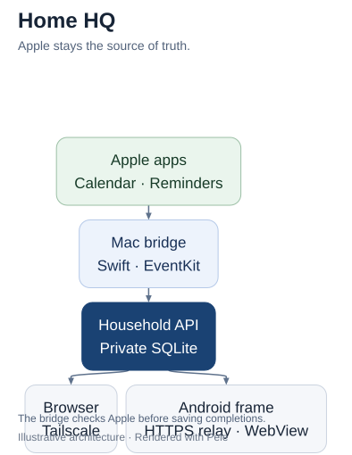

Explain · Pele 1.6.0
Apple stays the source of truth.
The Mac bridge supplies the dashboard through the Household API and a restricted home relay.

Simplified architecture. This diagram does not verify deployment or device behavior.
The mobile asset uses a vertical layout. Both assets render locally with links and images disabled.
Editable Mermaid source